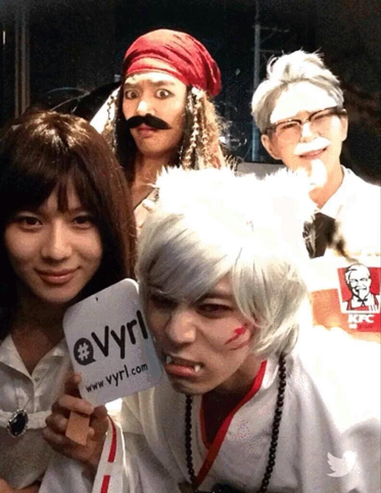

| 뒤로가기 |
샤이니 |
샤이니 | |
SHINee | |
그룹명 |
|
데뷔 |
|
장르 |
|
팬덤 |
|
소속사 |
|
유통사 |
|
외부링크 | |
1.소개 |
| "안녕하세요! 빛나는 샤이니 입니다!" | |
| SM엔터테인먼트의 5인조 아이돌 보이그룹. SHINee라 쓰고 샤이니라 읽는다. 어리고 귀여운 이미지와 그룹 이름 탓에 '빛돌이'라 불리기도 했으며(현재도 종종 불리는 별명), 데뷔 이전엔 SM 내에서 샤이니란 이름 대신 애기팀으로 불렸다고 한다. 2008년 데뷔 당시부터 큰 인기를 끌었으며 2009년부터 일본 진출을 계획, 2010년 말에는 일본에서 열린 샤이니의 첫 단독콘서트와 EMI Music Japan과의 계약을 잇따라 성공시키며 2011년 일본 시장에 성공적으로 진출했다. SM에서 찾기 힘든 그들만의 음악세계를 보여주며 SM 특유의 음악인 SMP가 아닌, 네오SMP로 불리운다. 가요계의 변화에 휩쓸리지 않고 그들만의 음악세계를 확립하고, SM에 대한 "아이돌을 너무 SM 스타일로 개조해놓는다" 등의 비판을 피하고 새로운 모습을 보여주기 위해 기존 SM과는 약간 다른 노선의 그룹으로 탄생되었다. 샤이니가 발표한 앨범들은 평론가들의 칭찬을 잇달아 받아 '평론가의 아이돌'이라는 칭호도 얻었다. 2012년 발표한 미니앨범 '셜록'에는 평론가들이 '샤이니는 한 번도 기대에 못 미치는 노래를 한 적이 없다', '아이돌 댄스곡들 중 가장 풍성하고 짜릿한 결과물이다' 등의 호평을 했다. 대중문화 평론가 이문원은 '샤이니는 기존 가수들과 다른 음악적 행보를 걷고 있다. 한마디로 말해 안티 트렌드다. 이번 앨범은 지금 당장 유럽 시장에 내놓아도 손색이 없으며 샤이니의 매력을 충분히 보여줬다.'고 평했다. | |
2.맴버 |
| 맴버 | 인스타그램 | 트위터 | 생일 | 개인 공식홈페이지 | 유튜브 |
| 온유 ^▽^ |
| 89.12.14 | |||
| 종현 ㅎㅅㅎ |
| 90.04.08 | 종현 공식 홈페이지 | 개인 유튜브 | |
| 키 * `ㅂ´* | *웨이보 | 91.09.23 | |||
| 민호 ㅍ_ㅍ | 91.12.09 | ||||
| 태민 6v6 | 93.07.18 | 태민 한국,태민 일본 | |||
3.활동 |
2008년 | |
| SM의 신인 아이돌은 대부분 데뷔 전부터 티저 사진을 띄우거나 SM 외부에서 오래전부터 SM의 어떤 아이들의 데뷔가 확정이라는 식의 루머가 돌아다닌 반면 샤이니는 사전 정보도 보내지 않고 데뷔해 많은 이들의 궁금증을 자아내었다. 공식적인 공중파 음악방송 데뷔날짜는 2008년 5월 25일 SBS 인기가요에서 선보인 데뷔 EP의 제목이자 동명의 타이틀 곡인 누난 너무 예뻐라는 곡이다. SM 특유의 음악 스타일인 SMP를 탈피한 장르여서 대체적으로 신선하다는 반응이였으며 특히 노래 후반에 막내 태민이 추는 독무가 인상적이라고 평가되었다. 미니앨범 1집 '누난 너무 예뻐' 의 활동이 끝난 뒤 정규 1집 앨범 'The SHINee World'를 발매했고 덴마크 가수 Martin의 'Show the World'를 리메이크 한 산소같은 너 라는 곡으로 활동했다. 멜로디가 쉽게 귀에 들어오는 곡은 아니지만 여전히 SMP가 전혀 없는 신선한 곡이란 점과 함께 멤버들의 인상 깊은 의자춤 덕분인지 데뷔 후 첫 1위를 하는 쾌거를 이루게 되었다. 그러나 1집 리패키지 앨범 타이틀 곡으로 발표된 아.미.고 (아름다운 미녀를 좋아하면 고생한다)'는 '와 차갑다 차갑다 얼음공주 오셨다.' , '하지만 섹시~ 잠깐만 기다려 girl~' , '그날 바로 급 노예모드 오금 저리고, 얼어붙어!' 등 두서없는 가사와 유영진 특유의 강렬한 비트로 SMP의 오라를 느끼게 했다. 데뷔 당시 신선한 느낌이었던 샤이니가 드디어 SMP의 맛이 가득한 아미고로 활동했을 땐 '샤이니도...'라며 아쉬워한 팬들이 많았다. 연말 시상식에는 남자 그룹 신인상을 받았다. 당시 많은 신인들이 쏟아져나왔으나 신인상 그랜드 슬램을 달성했고 그 이후 8년동안 신인상 그랜드슬램은 볼 수 없었다 . 당시 멤버당 트로피를 두개씩 들고 사진을 찍었다. 나중에 활동은 쉬었고 KBS 드라마 '꽃보다 남자'의 OST Stand By Me를 불러 인기를 끌어모았다. | |
2009년 | |
| 2009년 5월에 두 번째 미니앨범 Romeo를 발매했으며, 타이틀 곡은 미국 가수 코빈 블루의 'Deal With It' 이라는 곡을 리메이크한 '줄리엣(Juliette)'이다. 멤버 종현이 작사한 곡이다. 종현의 가사를 토대로 앨범 전체의 컨셉이 정해졌다고 하는데, 당시 2PM을 비롯한 남자 아이돌 그룹 사이에서 유행하던 근육질의 짐승남과는 완전히 상반되는 요정 컨셉으로 팬들은 물론 일반인들에게도 신선한 충격을 가져다주었다. 정엽과 에코브릿지가 작곡한 곡도 수록되는 등 전체적인 완성도가 높은 편. 원래 2009년 5월 22일 컴백 무대를 가지려고 했으나 멤버 온유가 계단에서 넘어져 앞니가 부러지는 사고를 당해 앨범 발매를 25일로 연기. 컴백 무대도 2주 연기되어 6월 5일로 옮겨졌는데, 컴백하자마자 KBS 뮤직뱅크 케이차트의 1위 후보로 슈퍼주니어와 다비치,씨야,지연과 후보에 오른데다가 첫 주 1위까지 차지. 멤버들이 기쁜지 목놓아 꺼이꺼이(재생이 안되면 근처에 같은 영상이 있다.)울었고, 종현은 거의 실신할 지경으로 울었다. 비슷한 시기에 MBC every1에서 지금은 꽃미남시대라는 프로그램의 고정MC을 맡고 있었으나 앨범 준비를 이유로 하차했다. 같은 해 10월에는 세 번째 미니 앨범 2009, Year Of Us를 발매하고 컴백하였다. 타이틀 곡은 Ring Ding Dong 이라는 괴이한 후크송이었는데, 이는 유영진의 작품이다. 해괴하게도 음원을 선공개 한 후 티저를 공개했고, SM은 발매 직전 음반을 전량회수하여 앨범 발매일이 미뤄졌다. 전량 회수 이유는 공개하지 않았지만 음반 발매 후 몇몇 음반에서 타이틀 링딩동의 수정 전 트랙이 실린 것이 확인 되었다. 타이틀 곡 링딩동은 한 번 들으면 빠져나올 수 없는 무서운 중독성을 보이며 '링딩동을 한 번도 못 들은 사람은 있어도 한 번만 들은 사람이 없다'는 말도 떠돌고 있으며 디씨 리믹스 버전까지 나온 상황. 후크송 특유의 중독성이 강하다. 여담이지만 이 곡의 작곡작사편곡을 모두 맏았던 유영진은 대중음악 최초로 '아프리카 콩고 드럼'을 사용했다고 하여 아프로일렉트릭이라는 새로운 말장난 장르를 만들어냈다고 주장하였다. 음악적으로는 링딩동은 아미고처럼 충격적이지만 샤이니는 처음으로 공중파 음악방송 SBS 인기가요에서 트리플 크라운 달성을 해본 곡이자 수능 금지곡으로도 유명했다. 활동 기간이 신종플루 유행기와 겹쳐 멤버들이 신종플루로 쉬는 동안 같은 회사의 슈퍼주니어의 예성과 이특이 대타로 특별출연한 적이 있다. 2009년 12월 미니앨범 활동이 끝날 즈음 후속곡이자 높아지는 인기에 보답하는 팬서비스 차원으로 수록곡 JoJo(or 조조)로 활동했다. | |
2010년 | |
|
연초까지 미니앨범 3집 활동의 후속곡 활동을 이어갔으며, 그 이후 공백기를 가졌다.
2010년 07월 08일 민호의 티져 사진 공개를 시작으로 12일까지 멤버들의 사진을 순차적으로 공개했으며 16일 뮤직뱅크 출연, 19일 정규 2집이 발매된다고 발표되었다. 티저 사진이 모두 공개된 후 팬들은 사진의 연출과 이해할 수 없는 컨셉에 카오스가 되었다. 게다가 다섯명이 모여 있는 사진도 컨셉이 달랐다. 이번만큼은 신곡의 장르는 아무도 예측할 수 없었고, 16일. 티저영상이 공개되었다. 그런데 민호는 드림팀 촬영 중 허벅지 근육에 부상을 입어 컴백 무대가 7월 23일로 미뤄졌고, 기사에서는 7월 23일까지 완치될지 확신할 수 없었다. 활동에 대해 민호의 의지가 확고해 더이상 미뤄지는 일은 없었지만 활동 초기에는 앉아서 무대에 임했다. 정규 2집 앨범 LUCIFER를 발매했고 7월 23일 KBS 뮤직뱅크를 통해 컴백무대를 가졌다. 2010년 10월 1일 뮤직뱅크에서 정규 2집 리패키지 Hello로 컴백했다. 10월 31일에 활동을 마쳤다. 이후 12월 18일~19일 KBS 88체육관에서 단독콘서트를 한다는 공지가 떴으나 팬들의 반발로 인해 체조경기장으로 장소가 변경되었고, 일정 역시 다음해 1월 1일~2일로 미뤄졌다. 참고로 한국에서의 첫 콘서트는 2011년 1월이지만 전체로 봤을 땐 2010년 12월 26일 일본 요요기 제 1체육관에서 진행된 콘서트가 샤이니의 첫번째 단독 콘서트다. | |
2011년 | |
|
1월 1일, 1월 2일 양일간 2만명의 관중을 동원하며 올림픽공원 체조경기장에서 단독 콘서트를 성공리에 마무리했으며, 3월 일본 정식 데뷔가 결정되었다. 레이블은 EMI Music Japan. 유니버설 뮤직 재팬이나 소니 뮤직에 비해서 많이 영세해진데다 EMI 본사가 휘청휘청인 지 오래인데다가 이전에 아이돌을 맡아본 경험이 한 번도 없다고 해 탐탁치 않는 팬들도 있었다. 동일본 대지진으로 인해 당초 3월 예정이었던 일본 진출에 관해 별 소식이 없다가 4월 27일, 일본 공식 홈페이지에 컨셉 사진과 싱글 발매 계획이 올라오게 되었고, 거기에 이틀 후인 29일에는 일본 싱글 발매 기념으로 애비 로드 스튜디오에서 아시아 가수 최초로 라이브를 한다는 기사가 뜨기도 했다. 6월 11일에 프랑스 파리에서 있었던 SM Town Concert in Paris에 참여하기도 했다. 이후 예고한대로 애비로드 스튜디오에서 일본 데뷔 기념 쇼케이스를 진행하였다. 추첨으로 뽑힌 일부 팬들과 기자들, 음반 관계자 그리고 예정에는 없었지만 현지팬들이 스튜디오 앞에 천여명이 몰려 그 중 50명을 추첨하여 현장에 초대하여 비공개로 진행하였다. 멤버 종현은 고열로 인해 마지막 한 곡만 참가하였다. 6월 22일 일본 데뷔 싱글 Replay - 君は僕のeverything-이 발매되었다. 커플링 곡은 'Hello'. 위클리 2위, 91000장 가량을 판매하며 케이팝 '그룹'의 '데뷔 싱글' 중 역대 최고 기록을 갱신했다. 그리고 2주차에도 9천장 가까운 판매고를 올리며 일본 레코드 협회의 골드 앨범 인증을 받았다. 8월 29일 일본 두번째 싱글인 Juliette이 발매되었다. 커플링 곡은 첫 오리지널 일본어곡인 'Kiss Kiss Kiss'. 발매 첫 날 오리콘 1위에 올랐지만 초동은 5만 3천장 정도로 데뷔 싱글에 비해서는 많이 팔리지 않았다. 데뷔 싱글이 워낙 잘 팔린 탓에 이번에도 잘 팔릴 것이라 생각했던 팬들은 실망했지만, 데뷔 싱글과는 달리 리셉션 응모 티켓 같은 상술이 없었다는 점을 감안한다면 꽤 괜찮은 편. 발매 2주차에 낙폭이 꽤 컸지만 발매된 지 약 한 달째에도 오리콘 30위권 내에 있었다. 그걸 빼고도 평균 성적을 내었다고 할 수 있다. 10월 12일 일본 세 번째 싱글인 LUCIFER를 발매했다. 커플링 곡은 '산소 같은 너'. 그런데 발매 첫 날 판매량은 18,409''장을 기록하며 나쁜 결과를 기록하였다. 게다가 유독 세 번째 싱글은 프로모션도, 어떠한 홍보도 없어 팬덤에서는 ''소속사 잘못 만났다, 일 년이나 한국 활동 쉰 결과물이 이거냐'' 등의 비난도 있다. 다행히 둘쨋날의 판매량이 첫째날을 넘었고, 일본 활동 외에도 7월에 대만, 8월에 중국 난징, 9월에 싱가포르에서 단독 콘서트를 가졌으며 일본 나고야, 오사카 등에서 아시아 투어 콘서트를 가졌다. 또한 12월 7일 일본 첫 정규 앨범 THE FIRST가 발매되었고, 2012년 일본 첫 아레나 투어 일정도 발표했다. 한국 아이돌 그룹 최초로 영국 런던의 레스터 스퀘어 내 오데온 웨스트 엔드 극장에서 단독공연을 했다. 티켓 예매로 예매 시스템이 다운된 것은 샤이니 공연이 처음이라고 한다. 2011년 한 해동안 국내 활동이 전혀 없었지만 연말 가요제인 SBS 가요대전과 MBC 가요대제전에 출연하였고, 특히 가요대제전에선 2집 타이틀곡 '루시퍼'의 락 버전으로 엄청난 퍼포먼스(...)를 보여주었다. 여기까진 참 좋았는데, 문제는 MBC가 정작 중요한 부분을 그냥 넘어갔다는 점이다. 현장에 있었던 팬들의 증언으로는 곡이 끝난 후 SHINee Is Back 이라는 알 수 없는 멘트와 비트의 곡이 잠시나마 깔리고 멤버들이 짧은 춤을 췄다고. 그러나 MBC는 루시퍼가 끝나자마자 다음 출연자로 화면을 돌렸고, 가요대제전이 끝난 후 새벽에 멤버 종현이 유에포타운을 통한 전체 문자로 'SHINee Is Back'에 대해 인증을 했다. 이런 사태로부터 팬들은 곧 컴백하는 것이 아니냐는 기대감을 품기 시작했는데 나중에 이 부분을 리허설까지 했다는 말이 확인되면서 정작 중요한 부분을 넘어간 MBC는 가요대제전 도중 있었던 여러 문제들과 함께 폭풍같이 까였다고 한다. | |
2012년 | |
|
오랜 공백기 끝에 'SHINee Is Back'과 같은 스포가 슬슬 터지기 시작하면서 컴백에 관한 루머가 돌기 시작했는데, 'Super Hero'라는 제목의 새로운 곡 (타이틀 곡으로 추정되었다) 을 노르웨이 프로듀서와 작업하고 있다는 소식이 등장하기도 하였으며, 김난도 교수가 트위터를 통해 샤이니의 새로운 곡 가사를 쓰고 있다고 인증하기도 하였다. 이 부분은 기사도 떴지만 아직 다음 앨범에 수록될지 확정되진 않았다고 했다.
컴백을 예고한 후 두 달이 넘도록 컴백에 관한 아무런 소식이 없었다. 2011년과 마찬가지로 소속사가 바쁜 이유도 있고 온유의 발목 부상으로 인해 복귀 시기가 불투명하다고 발표하기도 했다. 게다가 4월부터 예정된 일본에서 아레나 투어 때문에 아예 하반기 컴백이 점쳐지기도 하고 있었으며 그런 와중에 김난도 교수의 트윗 때문에 팬덤은 또 한번 대혼란이 일었다. 이러한 와중에도 2011년 1월에 있었던 콘서트의 라이브 음원 발매, 일본 정규 1집 'The First'의 라이센스반 발매, 멤버 Key의 뮤지컬 캐치 미 이프 유 캔 캐스팅 소식 등 계속 떡밥이 등장했다. 이러니 컴백 빼고 다한다는 말이 나왔을 정도였지만 1년 6개월의 공백기 끝에 3월 21일 미니앨범 4집 Sherlock으로의 컴백이 확정되었다. 한동안 소식이 없다가 3월 6일, 3월 25일에 열릴 KBS 열린음악회 출연 소식이 전해졌고, 결국 3월 8일 컴백이 발표되며 민호의 티져 이미지를 시작으로 멤버 태민, 온유, Key, 종현의 이미지가 차례로 등장했다. 티저 이미지의 컨셉이 상의 탈의나 보라색이나 연두색 등 충격적인 헤어스타일등을 선보였는데 사진마다 컨셉이 모두 달라 팬덤을 패닉에 빠뜨린 상태였다. 3월 19일 국내 음원 사이트는 물론 아이튠즈 스토어에 음원을 동시 공개한다고 발표되었다. 타이틀곡 제목도 미니앨범의 제목과 같은 'Sherlock'인데, 제목에 걸맞게 하나의 사건에 대해 이성적인 단서를 의미하는 'Clue'와 감정적인 단서를 의미하는 'Note' 두 곡을 한 곡으로 합친 하이브리드 리믹스라고 하였으며,3월 18일 자정 음원이 공개되었고, 동시에 뮤직비디오 티져가 공개되었는데 먼저 공개된 퇴폐적인 이미지도 히피 이미지도 아닌 그야말로 셜록 홈즈 스타일이라 팬들은 다시 한 번 패닉에 빠졌다. 한편 안무가 상당히 화려하고 고난이도인데, 자넷 잭슨 등의 안무를 맡았던 토니 테스타의 작품이라고 하며, 3월 22일 엠 카운트다운 방영 직전에 뮤직비디오가 공개되었다.3월 23일 뮤직뱅크 첫 방송 이후 타이틀 곡인 'Sherlock'의 MR제거 영상과 멤버 태민의 장발로 인한 걸그룹 태민 주의보 등이 인터넷 상에서 화제가 되었다. 3월 30일 KBS 뮤직뱅크에서 1위 후보에 올랐으나 역대 최고 방송점수인 9882점을 획득한 2AM에게 패배했다. 그러나 4월 6일과 4월 13일자 케이차트에서 일등을 수상했으며, SBS 인기가요에서는 4월 1일, 4월 8일과 4월 15일 3주 연속으로 뮤티즌송을 수상함에 따라 트리플 크라운을 달성하였다. 셜록은 곡, 안무, 분위기 모두 흠 잡을곳이 없는 곡이라는 찬사를 받았으며, 샤이니의 이미지였던 스키니 동생 이미지를 탈피하는 계기가 되었다. 멤버들의 전체적인 실력이 눈에 띄게 향상되었고, 진화한 모습을 보여준 곡이기도 하다. 이 곡으로 샤이니는 누나 팬이라는 범주를 벗어나 비평가나 관심이 적은 남성들에게도 찬사를 받으며 상당한 호응과 관심, 호감을 얻게 된다(사실 이 전에 샤이니는 너무 누나들 겨냥이라는 비판이 있었는데, 이것을 종식시키고 과격한 댄스에 완벽한 라이브를 소화하는 그룹으로 인식이 바뀌었으며, 남성들이나 대중들에게도 인정받는 계기가 되었다). 4월 21일 MBC 쇼! 음악중심에서 마지막 무대를 가진 후 4월 25일부터 7월 1일까지 일본에서 첫 아레나 투어 콘서트를 열어 총 20회 공연 동안 25만명의 관객을 모았다. 이로써 한국 가수 첫 아레나 투어 사상 최다 관객 동원 기록을 남겼다. 5월 16일 일본에서 네 번째 싱글 Sherlock이 발매되었다. 커플링 곡은 'Keeping Love Again'이라는 미디엄 템포의 발라드. 첫 날 2만여 장을 판매하여 오리콘 차트 2위까지 올랐다. 7월 21일과 7월 22일 서울 올림픽 공원에서의 단독 콘서트를 가졌고, 이를 시작으로 싱가포르, 타이완 등지에서 두 번째 아시아 투어 SHINee WORLD 2 콘서트를 진행중했으며, 같은 시기에 SMTOWN World Tour III에 함께 참여하였다. 8월 16일에 일본에서 있었던 메자마시 라이브에서 일본 첫 오리지널 싱글인 Dazzling Girl의 발매가 발표되었다. 10월 10일 발매되었으며 커플링 곡은 'Run With Me'. 그동안 계속되어 온 싱글 판매량의 부진과 일본내 반 한류 정서로 팬들은 불안해 했으나 예상과 달리 5만 5천장 선을 끊으면서 발매 당일 오리콘 차트 2위를 차지했다. 12월 12일 두 번째 오리지널 싱글이자 처음으로 발라드를 타이틀 곡으로 내건 1000年、ずっとそばにいて…가 발표되었다. 커플링 곡은 '君がいる世界'. 독특하게도 단편 영화같은 뮤직비디오를 내세웠다. 12월 28일 KBS 가요대축제, 12월 29일 SBS 가요대전, 12월 31일의 MBC 가요대제전에 모두 참여하여 아이돌 슈퍼밴드나 f(x)와의 합동 무대 등은 물론 평소 음악방송에서 보여주었던 미니앨범 4집의 타이틀곡 'Sherlock'에 'Clue'와 'Note'를 다시 리믹스한 무대를 선보이기도 하였다. | |
2013년 | |
샤이니에게 각종 가요 프로그램 1위와 생애 첫 대상인
| |
2014년 | |
|
2013년 12월 31일 시작한 MBC 가요대제전에서, 샤이니는 '피아노 어쿠스틱 버전 Dream girl'과 'Everybody' 무대를 선보였다. 피아노 반주는 헨리. 가요대재앙이라고 악평을 듣던 가요대제전의 제작을 2013년에는 쇼챔피언 제작팀이 맡게 되었는데, 쇼챔피언 제작팀의 완벽한 연출, 카메라, 음향과 샤이니의 훌륭한 안무, 라이브 실력이 만나 최고의 무대를 만들어 내었다. 가요대제전이 끝난 직후 1월 1일 새벽, 인터넷과 각종 가요대제전 관련 덧글들이 샤이니에 대한 반응으로 뜨거웠다. Everybody 무대의 퍼포먼스와 라이브 실력으로 많은 사람들을 감탄하게 만든 듯 하다. 1월 16일 골든디스크 시상식에서 음반부문 인기상, 음반부문 본상, 쎄씨 아이콘상을 받으며 수많은 출연 가수들 중 유일하게 3관왕을 거머쥐었다. 1월 23일 서울가요대상 시상식에서 본상과 인기상, 한류 특별상을 수상하며 역시 출연 가수들 중 유일하게 3관왕을 거머쥐었다. 인기상은 2년 연속으로 받은 것이라 더욱 특별했다. 2014년 공백기 동안에는 멤버들 각자 개인 활동이 활발한 모습을 보여줬다. 온유는 정글의 법칙 출연, 종현은 MBC라디오 푸른밤 DJ 과 S.M. THE BALLAD 활동, 태민은 솔로 앨범 발매, 민호는 지난해에 이어 음악중심 MC를 계속 진행하였고, Key는 뮤지컬과, 남우현과 유닛인 투하트 활동을 하였다. 여러가지 정황상 2014년 3분기에 앨범이 나올 예정이었으나 온유의 성대 수술로 인해 앨범을 내지 못하였다. 7월 25일 멤버 태민의 솔로 미니앨범 'ACE'의 데뷔 확정을 알리는 기사가 나왔으며, 8월 11일 티저 이미지 공개, 8월 12일 자정 뮤직비디오 티저를 공개했다. 음원은 8월 18일 발매하였으며, KBS 뮤직뱅크에서 첫 솔로 데뷔무대를 성공적으로 마쳤다. | |
2015년 | |
|
2015년 SM 첫 주자로 종현의 첫 솔로 활동이 확정되었다. 1월 2일에 공개된 티저 영상을 시작으로 앨범에 참여한 뮤지션의 정보를 순차적으로 공개했고, 1월 7일 자이언티가 참여한 수록곡 'Deja-Boo'를 선공개했다가 반응이 좋자 더블 타이틀로 변경되었다. 이어 1월 12일 아이언이 참여한 더블 타이틀곡 'Crazy (Guilty Pleasure)'와 앨범 전곡을 공개했고, 활동은 2월 말까지 이어졌다.
3월 11일 일본에서 도쿄돔 공연기념으로 싱글 앨범 'Your Number'을 발표했고,일본 도쿄돔에 입성하여 한류스타의 위엄을 보였다. 시야제한석까지 다 매진된 샤이니의 도쿄돔 공연은 총 이틀동안 10만명 이상의 관객을 모았다. 2015년초부터 더 샘, 배스킨라빈스등의 광고모델을 맡았는데 굉장히 질 좋은 광고들을 다량 촬영하였다. 기존의 뿌셔뿌셔나 에뛰드 하우스와 비교해보면 정말 이보다 좋을 수 없구나라고 생각하게 된다. 5월 11일 4번째 단독콘서트가 열리기 4일전 티저사진과 컴백 트레일러가 공개되어 본격 컴백 소식을 알렸으며. 5월 15일부터 17일까지 3일간 체조경기장에서 네 번째 단독 콘서트인 SHINee WORLD IV를 개최하면서 타이틀곡인 'View'를 비롯한 Odd앨범의 수록곡이 선공개되었고, 1년 7개월의 긴 공백기 끝에 5월 18일에 정규 4집 'Odd' 의 발매가 발표되었다. 5월 23일 드림콘서트에 참가하였으며, 7년차 아이돌답게 마지막을 장식하였다. 연말 시상식이라던지 드림콘서트등의 많은 가수가 출현하는 합동무대는 보통 음향이 부실해서 가수들의 진짜 실력이 나오는 경우가 많은데, 라이브 실력으로 평정이 나있는 샤이니답게 좋은 무대를 보여줬다는 평. 그리고 샤이니월드의 엄청난 떼창을 볼 수 있었던 날이었다. 8월 3일 4집 리패키지 Married To The Music이 발표되었다. 4집 타이틀곡 'View'를 작곡한 LDN Noise와 다시 한번 호흡을 맞추었다. 타이틀곡 'Married To The Music'의 장르는 펑키 디스코이다. CD사진, MV가 상당히 그로테스크하다. Married To The Music 활동이 끝난 이후의 하반기에는 일본 팬미팅, 싱글 Sing Your Song발매, 에이네이션 참가등 일본에서 주로 활동하였다. 10월 7일 종현이 메인인 Mnet의 '월간 라이브 커넥션' 과 민호가 주연인 온스타일 드라마 '처음이라서' 가 공교롭게도 같은 날, 같은 시각(10/07 pm 11:00)에 첫 방송을 했다.  10월 29일 SM 주최로 열리는 할로윈 파티에 참여하였다. 온유는 KFC 할아버지 종현은 이누야샤 코스프레를 했다. 옷을 사다 보니 셋쇼마루 같아졌지만 이누야샤라고 주장했다. 키는 제작년, 작년에 이어 역시나 엄청난 것을 보여주었다. 맥도날드 삐에로를 코스프레한 것. 그래서 KFC랑 경쟁사 심지어 어떤 기사에는 키가 할로윈을 위해 사는 남자라고 민호는 잭스페로우, 태민은 하울 코스프레를 했다. 뒤이어 올라온 에브리샷 샤이니버전에는 태민이 편의점에서 비비빅을 고르는 장면이 올라왔다. 할로윈 이벤트가 끝난 뒤 며칠 후, 맥도날드에서 키에게 직접 무료 이용권을 보내왔다고 한다. 한 덕후가 세어보기로는 91장이라고. 근데 정작 본인은 탄수화물을 먹지 않는다며 후에 모든 무료 이용권을 자주 봉사하러 가는 보육원에 기증했다고 한다. 11월 19일 종현이 직접 쓴 소설책 '산하엽-흘러간, 놓아준 것들' 이 정식 발매 한다. 종현의 소설책 '산하엽- 흘러간, 놓아준 것들'은 지난 10월 2일 출시되었고, 첫 솔로 콘서트 'THE STORY by JONGHYUN'이 진행되는 동안 SMTOWN 코엑스 아티움에 위치한 SMTOWN THEATRE 현장과 일부 온라인 서점에서 한정 판매돼 뜨거운 반응을 얻었고, 미처 소설책을 구하지 못한 팬들의 추가 판매 문의가 쇄도하는 등 열화와 같은 요청으로 결국 11월19일 정식 발매하기로 결정했다 한다. 12월 2일 시상식 MAMA에 참여하여서 베스트 댄스 퍼포먼스 남자그룹상을 받았으며, 3부 오프닝으로 Married To The Music 수록곡인 SAVIOR와 Odd 타이틀곡 View를 편곡해서 불렀는데 핸드마이크를 사용해서 뛰어난 라이브 실력을 보여줬을뿐만 아니라, SAVIOR 시작 전 드론을 사용한 종현의 개인무대와 View의 편곡이 굉장히 잘됐다는 평을 받았다. | |
2016년 | |
| 1월 1일 일본 4집 D×D×D가 발매되었다.
1월 6일 'D×D×D' 앨범으로 오리콘 위클리 앨범 차트 1위를 차지하였다! 2014년 9월 발표한 정규 3집 ‘I'm Your Boy’에 이어 2연속 위클리 앨범차트 1위에 올랐다. 1월 16일 서울가요대상에 참가하여 Love Sick과 View를 부르고 본상을 받아갔다. 이번 상을 포함하면 샤이니는 서울가요대상에서 총 11번 수상을 하였으며, 이로써 서울가요대상에서 상을 제일 많이 받은 가수가 되었다! 본상도 최초로 5회 수상. 여담으로 이 날 멤버 Key가 수상소감을 마친 뒤에 태민의 솔로를 기대해달라고 언급했다. 바로 다음날 솔로 컴백 소식이 떴다. 1월 21일 골든디스크 시상식에 참여하여 종현은 솔로로 본상을 수상하였고, 본체로는 인기상과 본상을 수상하였다. 2월 22일, 태민의 첫 정규앨범 쇼케이스에 MC로 참여한 민호가 "나머지 멤버들은 올해 앨범 준비하고 있으니 많은 기대 바란다"라는 말을 전하였다. 한국에서는 골든 디스크 시상식 참여 이후 오랜만에 있는 완전체 떡밥. 사실 작년에 2가지의 한국 앨범을 내서 정규 앨범 이후였던 2011년과 2014년처럼 한국에서는 개인 활동만 있을것이라는 추측이 있었는데, 민호의 말로 인해 2016년 내에 샤이니 완전체 활동은 확실시 되었다. 2월 23일 태민이 솔로 정규 앨범 'Press It'을 발매했다. 3월 28일 중국 상해에서 열린 '동방풍운방 시상식'에서 '아시아 베스트 그룹상'을 수상했다. 3월 29일 쿠뮤직 아시아 성전에서도 '아시아 베스트 그룹상'을 수여받았다. 4월 1일 만우절에는 뿌셔뿌셔 광고가 TV에서 방영되었다. "합성 잘했네..."라며 넘어간 팬들이 많았다. 샤이니의 멤버 키는 너무 멀쩡하게 찍었다고 한다. 5월 18일 일본 13번째 싱글'君のせいで'이 발매되었다. 5월 19일 도쿄돔 공연을 끝으로 일본 투어를 마무리함으로써 일본 전국 투어 누적 관객수 100만명을 돌파하는 기록을 세웠다. 5월 24일 태민에 이어 종현의 첫 정규앨범 '좋아'가 발매되었다. 고려대학교 축제에 남자 아이돌이 온 것은 실로 굉장히 오랜만이다. Ring Ding Dong을 안부른 것은 시험기간인 학생들을 위함인가 여학생들은 물론이고 남학생들한테도 반응이 좋았다고 한다! 전국생활체육대축전 참석 스케줄을 보고 당연히 입실렌티 티켓을 사지 않은 덕후들은 절망했다. 7월 27일 태민이 샤이니 멤버 중 처음으로 일본 솔로 앨범 'さよならひとり(사요나라히토리)'를 발매했다. 7월 6일 さよならひとり(사요나라히토리) 뮤직비디오가 선공개되었고 태민의 생일이기도 한 7월 18일에 일본에서 쇼케이스가 열렸다. 동시에 한국에서의 스페셜 활동도 확정되어, 8월 5일 뮤직뱅크를 시작으로 한 주간 음악방송에 출연했다. 힛더스테이지에 사요나라히토리로 경연해 2위와 압도적인 표차를 보이며 우승을 거머쥐었는데, 현대무용에 비슷한 아름다운 안무 덕분에 뜨거운 화제가 되었다. 조회수 30만에 불과하는 다른 참가자들과 달리 조회수 100만 돌파라는 기록을 세웠다. 오디션 프로그램 등에서 사요나라히토리를 커버하는 사람들을 심심찮게 볼 수 있었으나 안무의 극악의 난이도 때문에 커버 퀄리티는 좋지 않다. 연말 시상식 MAMA에서도 리믹스로 사요나라히토리를 선보였고 베스트퍼포먼스상을 받아갔다. 9월 2일 ~ 9월 4일 올림픽공원 체조경기장에서 다섯 번째 단독 콘서트 SHINee WORLD V를 개최하였다. 콘서트 마지막 날, 온유가 발목을 접질리는 부상을 당했다. 9월 27일에 정규 5집 발매 소식의 기사를 시작으로 티저 공개가 시작되었다. 5집의 컨셉인 복고에 맞춰 과거 90년대 신문에서나 보던 TV, 라디오 편성표 스타일의 티저 스케쥴표가 공개되었으며 10월 2일까지 자정에는 인스타그램을 통해 음성사서함 느낌의 수록곡 미리듣기와 정오에는 공식홈의 티저 사진을 공개하였다. 10월 5일 정규 5집 1 of 1이 발매되었다. 10월 6일 엠카운트다운에서 컴백했다. 11월 15일 정규 5집 1 of 1의 리패키지 앨범 1 and 1을 발매하고 2주간 짧고 굵은 활동을 하였다. 12월에 종현의 단독 콘서트인 JONGHYUN - X - INSPIRATION이 개최되었다. 12월 9일에는 콘서트 오프닝곡이었던 Inspiration이 SM STATION으로 발매되었다. | |
2017년 | |
수고했어요, 정말 고생했어요. 그댄 나의 자랑이죠.1월 14일 제 31회 골든디스크 시상식에서 인기상 (글로벌 투표), 음반부문 샤이니 본상, 음반부문 태민 본상까지 3관왕의 영예에 올랐고, 1월 19일 2017년 제 26회 하이원 서울가요대상에서 인기상(국내) 를 받았다.1월 28일부터 4월 30일까지 'SHINee WORLD 2017 FIVE' 일본투어를 진행했다. 총 20회 예정이었지만 현지의 반응으로 5회 추가되어 총 25회 공연을 진행했다. 현재 전회차 매진되어 작년보다 커진 규모로 더 많은 관객을 동원했으며, 2월 22일 일본 정규 5집 FIVE가 발매되었다. 4월 2일 종현 푸른 밤 하차. 하차 이유는 국내외를 쉴 틈 없이 오가야 하는 무리한 일정에도 '푸른 밤' DJ 자리를 지켜왔지만 더 이상은 조율이 어렵다고 판단, 제작진과의 긴 대화 끝에 내린 결정이라고 한다. 4월 13일 키 또한 인해 M countdown MC 하차. 5월 4일 SM STATION 2에서 온유와 로코베리가 듀엣으로 부른 '수면제'가 음원 공개되었다. 5월 21일 고려대학교 화정체육관에서 데뷔 9주년 기념 팬미팅을 했다. 원래 sm에서는 5주년 7주년 10주년만 공식적으로 팬미팅을 진행하지만 이날은 샤이니가 원해서 한 것이라 한다. 특히 이 날 멤버별로 팀을 나눠 팬들과 함께한 게임이 히트였다는 후문이 있다. 7월 8일자 SMTOWN LIVE 콘서트에서 역시나 미친 라이브와 내일이 없는 무대를 보여주었다. 정말 그 어느 루키보다도 각잡힌 격렬한 퍼포먼스를 보여줘 호평세례를 받는 중. 샤이니만의 팀워크가 또 한번 빛을 발한 것이, 'Everybody' 무대의 에브리바디 4K 직캠. 7월 18일 태민이 일본 미니앨범 2집 'Flame of Love'를 발매한다. 또한 7월 1일, 7월 2일 양일간 일본 무도관에서 솔로 콘서트도 개최해 약 3만석을 꽉 채우고 무려 라인 생중계 32만뷰를 달성하는 등 대성황을 이루었다. 8월 12일,멤버 온유가 강남의 논현동 클럽에서 20대 여성의 다리를 두 차례 만진 혐의로 불구속 입건되었다. 그러던 9월 중 태민이 솔로로 컴백할 것으로 예상했다. 당초 8월 컴백을 예상 중이었으나 컴백과 맞춘다던 리얼리티가 미뤄져 컴백도 미뤄진 것으로 보인다. 실제로 누가 먼저일지 점쳐지던 소속사 후배의 티저가 먼저 뜨면서 미뤄진 것이 확정. 컴백에 맞춰 9월 7일부터 네이버 V앱으로 'the TAEMIN: Xtra cam'이라는 이름의 리얼리티를 방영하게 되었다! 태민의 솔로 활동 마무리 후 샤이니 완전체 컴백이 있을 것이라 추측되었었다. 10월 16일 태민의 정규 2집 MOVE가 발매되었다. 원래 5인 공연 예정이었으나 상기한 불미스러운 일로 인해 온유를 제외한 멤버 4인이 9월 2-3일 양일간 도쿄돔에서 콘서트를 진행하였고, 12월 초에 갑작스럽게 태민의 리패키지 MOVEing이 발매된다는 기사가 나왔다. 비록 큰 일을 겪었지만, 네 명의 멤버들의 활발한 개인활동으로 인해 팬들은 안심하려는 찰나.. 12월 18일 멤버 종현이 서울특별시 강남구 청담동에 위치한 한 레지던스 호텔에서 사망하였다. | |
2018년 | |
|
원래 2월 17일부터 일본 돔 콘서트가 예정되어 있었지만, 종현의 갑작스러운 사망으로 인해 멤버들의 심리적 문제로 무산될 가능성이 있었지만, 2018년 1월 9일 멤버들이 자필 편지로 직접 투어를 그대로 진행하겠다고 밝혔으며 4인조로 활동하겠다고 선언했다.
1월 23일 종현의 앨범 poetㅣartist가 발매되었다. 타이틀곡은 '빛이 나' 라는 곡으로 종현의 별명이 블링블링 이스 종현이라는 것을 생각하면 빛=나 라는 해석도 가능하다. 2월 17일, 2월 18일 양일간 샤이니의 일본 돔투어 'SHINee WORLD THE BEST 2018 ~FROM NOW ON~' 쿄세라 돔 공연이 진행되었다. 종현이 생전 녹음하고 간 신곡이 공개 되었는데 발매될 새 앨범의 타이틀 곡으로 추정되는 EveryTime과 콘서트명과 동일한 발라드곡이자 팬송 FROM NOW ON이 공개되었다. FROM NOW ON 무대에서는 멤버들이 흰 수트를 입고 왼가슴 주머니에 빨간 장미를 꽃힌채 등장했는데, 종현의 자리엔 빨간 장미가 꽃힌 마이크만 있어서 많은 팬들이 슬퍼하였다. 또한 멤버들이 종현에 대한 그리움으로 울자 샤월들도 울고 콘서트 중계, 프리뷰 영상을 듣고보는 샤월들도 많이 울었다. 3월 7일 뮤지코인이라는 음악 저작권을 경매로 거래하는 사이트에서 5인조 샤이니로써 활동한 한국에서의 마지막 앨범인 1 and 1의 수록곡 별빛바램을 경매한다는 기사가 올라와 논란이 되고 있다. 샤이니 감성 발라드 ‘별빛바램’, 종현 추모 위해 경매 형태로 팬들 만난다 해당 기사를 접한 팬들과 일반인들은 그야말로 총체적 난국. 종현이 참여한 곡도 아닐뿐더러, 수록곡이기 때문에 팬덤 내부의 반응은 싸늘한 편이다. 이번 일은 SM과는 관련 없지만, 곡의 저작권자 중 한 명이 권리를 양도하는 것이기 때문에 사실상 막을 방법은 없다고 한다. 5월 12일 태민이 2018 드림콘서트에 참가했다. 이 날, 타 팬덤에서 여전했던 샤월들의 응원소리를 극찬한 글이 올라오거나, 응원봉의 어마무시한발광으로 인해 눈길을 끌었다. 태민은 MOVE와 괴도를 불렀다. 또한 2016년, 2017년에 이어 3년 연속 드림콘서트 출연이다. 무대가 끝난 직후 태민이 새 공식봉 으로 추정되는 응원봉을 들고 있는 모습이 공계에 올려져서 많은 샤월들이 공식봉이 다시 생기냐며 기뻐하고 있다. 기사 사진도 상당히 고퀄로 나와서 몇몇 팬들 사이에서 2018 드림콘서트 태민은 '물의 신'으로 불리고 있다. 5월 25일 10주년을 맞이하여 데뷔일에 새 앨범이 발매되어, 컴백하는 것이 확정되었다. 2018년 5월 28일 데뷔 10주년 앨범정규 6집 《The Story of Light EP.1》으로 첫 4인체제로 국내 컴백 하였다. 2018년 6월 11일 《The Story of Light EP.2》가 발매되고 이어서 2018년 6월 25일, 《The Story of Light EP.3》가 발매되었다. | |
4.앨범 |
| 음반 | 음반이름 | 발매일 | 타이틀곡 |
| 미니 1집 | 누난 너무 예뻐 (Replay) | 08.05.25 | 누난 너무 예뻐 (Replay) |
| 정규 1집 | The SHINee World | 08.08.28 | 산소같은 너 (Love Like Oxygen) |
| 정규 1집 리패키지 | Amigo | 08.10.24 | 아.미.고 (Amigo) |
| 미니 2집 | Romeo | 09.05.18 | 줄리엣 (Juliette) |
| 미니 3집 | 2009, Year Of Us | 09.10.14 | Ring Ding Dong |
| 정규 2집 | Lucifer | 10.07.19 | Lucifer |
| 정규 2집 리패키지 | Hello | 10.09.30 | Hello |
| 일본 싱글 1집 | Replay - 君は僕のeverything- | 11.06.22 | Replay - 君は僕のeverything- |
| 일본 싱글 2집 | Juliette | 11.08.29 | Juliette |
| 일본 싱글 3집 | Lucifer | 11.10.12 | Lucifer |
| 일본 정규 1집 | THE FIRST | 11.12.07 | Lucifer |
| 미니 4집 | Sherlock | 12.03.19 | Sherlock.셜록 (Clue+Note) |
| 일본 싱글 4집 | Sherlock | 12.05.16 | Sherlock |
| 일본 싱글 5집 | Dazzling Girl | 12.10.10 | Dazzling Girl |
| 일본 싱글 6집 | 1000年、ずっとそばにいて… | 12.12.12 | 1000年、ずっとそばにいて… |
| 정규 3집 챕터 1 | Dream Girl - The Misconceptions of You | 13.02.19 | Dream Girl |
| 일본 싱글 7집 | Fire | 13.03.08 | Fire |
| 정규 3집 챕터 2 | Why So Serious? - The Misconceptions of Me | 13.04.26 | Why So Serious? |
| 일본 정규 2집 | Boys Meet U | 13.06.26 | Breaking News |
| 정규 3집 합본 | The Misconceptions of Us | 13.08.08 | 너와 나의 거리 (Selene 6.23) |
| 일본 싱글 8집 | Boys Meet U | 13.08.21 | Boys Meet U |
| 미니 5집 | Everybody | 13.10.14 | Everybody |
| 일본 싱글 9집 | 3 2 1 | 13.12.04 | 3 2 1 |
| 일본 싱글 10집 | LUCKY STAR | 14.06.24 | LUCKY STAR |
| 일본 정규 3집 | I'm Your Boy | 14.10.01 | Downtown Baby |
| 일본 싱글 11집 | Your Number | 15.03.11 | Your Number |
| 정규 4집 | Odd | 15.05.18 | View |
| 정규 4집 리패키지 | Married To The Music | 15.08.03 | Married To The Music |
| 일본 싱글 12집 | Sing Your Song | 15.10.28 | Sing Your Song |
| 일본 정규 4집 | D×D×D | 16.01.01 | D×D×D |
| 일본 싱글 13집 | 君のせいで | 16.05.18 | 君のせいで |
| 정규 5집 | 1 of 1 | 16.10.05 | 1 of 1 |
| 정규 5집 리패키지 | 1 and 1 | 16.11.15 | Tell Me What To Do |
| 일본 싱글 14집 | Winter Wonderland | 16.12.21 | Winter Wonderland |
| 일본 정규 5집 | FIVE | 17.02.22 | Get The Treasure |
| 정규 6집 EP.1 | The Story of Light EP.1 | 18.05.28 | 데리러 가(Good Evening) |
| 정규 6집 EP.2 | The Story of Light EP.2 | 18.06.11 | I want you |
| 정규 6집 EP.3 | The Story of Light EP.3 | 18.06.25 | 네가 남겨둔 말(Our Page) |
| 정규 6집 합본 | The Story of Light Epilogue | 18.09.10 | 셀 수 없는 |